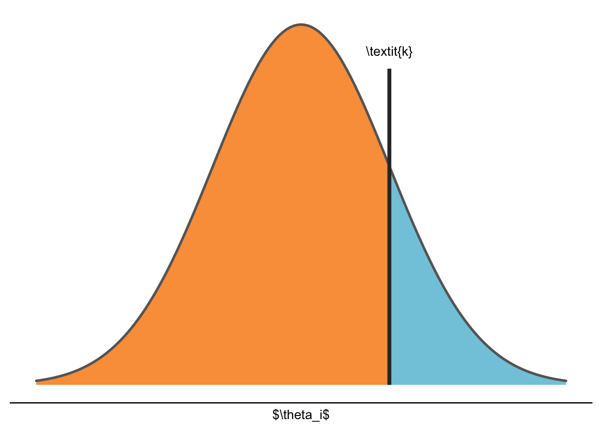

Chapter 1 Introduction
trial code
## ID ID_class externalizing_sum internalizing_sum gender age_year Avm Avp
## 1 25 2 16 7 F 8.42 1.0 1.000000
## 2 27 2 3 3 F 9.00 2.0 2.166667
## 3 29 2 5 5 M 9.00 3.5 2.200000
## 4 30 2 11 11 M 8.92 1.6 2.666667
## 5 31 2 0 1 F 9.00 2.0 2.800000
## 6 32 2 4 12 F 8.92 3.0 2.833333
## av_m av_p Anxm Anxp anx_m anx_p mother father
## 1 1.0000000 1.0000000 1.000000 1.000000 0.8333333 1.0000000 Secure Secure
## 2 1.0000000 1.0000000 1.000000 1.000000 1.0000000 1.0000000 Anxious Secure
## 3 1.0000000 0.8333333 1.500000 2.400000 1.0000000 0.8333333 Fearful Anxious
## 4 0.8333333 1.0000000 1.600000 1.666667 0.8333333 1.0000000 Anxious Avoidant
## 5 1.0000000 0.8333333 1.833333 1.333333 1.0000000 1.0000000 Anxious Avoidant
## 6 1.0000000 1.0000000 3.200000 2.833333 0.8333333 1.0000000 Anxious Fearful
## interaction
## 1 M_Secure_F_Secure
## 2 M_Anxious_F_Secure
## 3 M_Fearful_F_Anxious
## 4 M_Anxious_F_Avoidant
## 5 M_Anxious_F_Avoidant
## 6 M_Anxious_F_Fearfulplot trial

table trial
| Mother Attachemnt | Secure | Anxious | Avoidant | Fearful | Total |
|---|---|---|---|---|---|
| Secure | 125 | 49 | 49 | 8 | 231 |
| Anxious | 51 | 100 | 98 | 37 | 286 |
| Avoidant | 25 | 67 | 126 | 12 | 230 |
| Fearful | 5 | 14 | 38 | 43 | 100 |
| Total | 206 | 230 | 311 | 100 | 847 |
trial citation
troppe cit (McElreath, 2020)
Gu, X., Mulder, J., & Hoijtink, H. (2018). Approximated adjusted fractional Bayes factors: A general method for testing informative hypotheses. British Journal of Mathematical and Statistical Psychology, 71(2), 229–261. https://doi.org/10.1111/bmsp.12110
McElreath, R. (2020). Statistical rethinking: A Bayesian course with examples in R and Stan (2nd ed.). Taylor and Francis, CRC Press.
References
Gu, X., Mulder, J., & Hoijtink, H. (2018). Approximated adjusted fractional Bayes factors: A general method for testing informative hypotheses. British Journal of Mathematical and Statistical Psychology, 71(2), 229–261. https://doi.org/10.1111/bmsp.12110
McElreath, R. (2020). Statistical rethinking: A Bayesian course with examples in R and Stan (2nd ed.). Taylor and Francis, CRC Press.